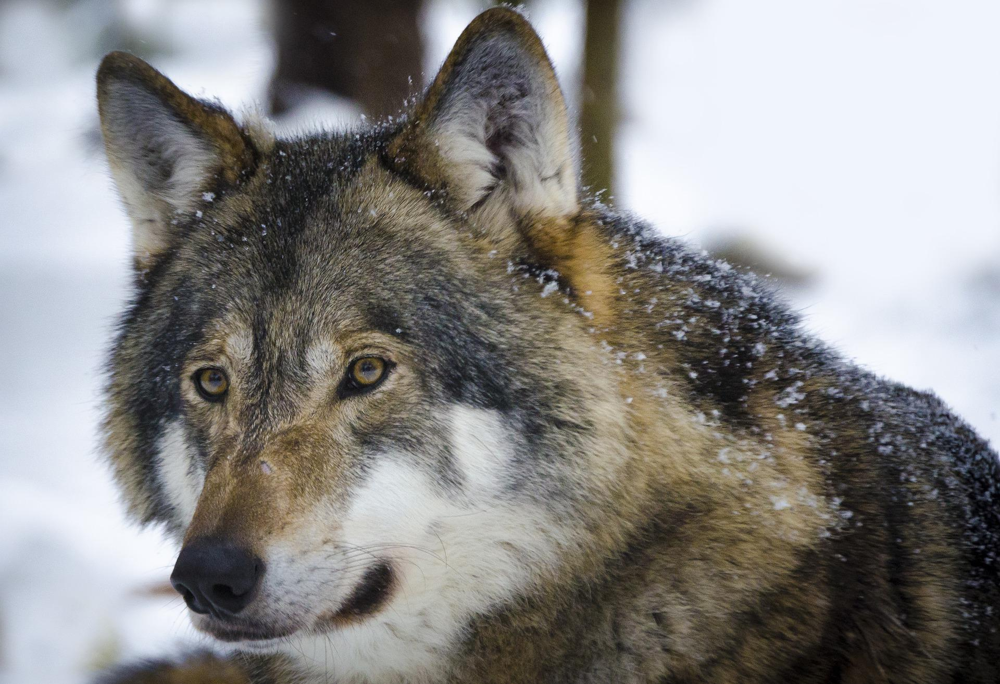

5 Cara Unik Hewan Melihat Warna, Mata Manusia Kalah?!
Kamu mungkin pernah atau sering mendengar mitos kalau anjing itu buta warna, "Anjing hanya bisa melihat hitam dan putih" itulah mitos yang dipercayai kebanyakan orang. Sebenarnya pernyataan tersebut kurang tepat, karena berbeda dengan manusia, hewan memiliki caranya sendiri dalam melihat, termasuk anjing. Sebelum kita mulai membahas, ada baiknya kita pelajari dulu bagaimana mata manusia bekerja. Agar kita dapat melihat, sinar cahaya harus dibelokkan atau dibiaskan, sehingga dapat mencapai retina. Begitu cahaya mencapai retina, cahaya itu kemudian diambil oleh jutaan fotoreseptor atau sel peka cahaya yang disebut kerucut dan batang. Sel kerucut dan batang ini mengubah gelombang cahaya menjadi informasi yang dapat diproses otak anda, seperti warna, bentuk, dan gerakan. Pada dasarnya, batang menginterpretasikan cahaya, dan kerucut menginterpretasikan warna. Hewan yang benar-benar buta warna sama sekali tidak memiliki sel kerucut, dan hewan yang hanya dapat melihat pada siang hari sama sekali tidak memiliki sel batang, tetapi kondisi ekstrem ini jarang terjadi dan sebagian besar hewan memiliki kombinasi sel kerucut dan sel batang.
Lantas, bagaimana hewan melihat warna? Berikut ini penjelasannya!
1. Kucing dan anjing melihat dalam nuansa biru Manusia memiliki tiga kerucut reseptor warna, sedangkan anjing hanya memiliki dua. Mereka kehilangan satu yang mendeteksi warna merah. Jadi memang benar bahwa anjing tidak melihat banyak warna seperti kita, tetapi mereka tidak buta warna, hanya saja mereka hanya bisa melihat nuansa biru dan kuning. Hal ini juga berlaku untuk kucing dan sebagian besar mamalia di dunia. Meskipun kucing dan anjing memiliki kerucut lebih sedikit, kucing dan anjing memiliki sel batang lebih banyak yang membuat mereka dapat melihat lebih jelas dalam kondisi minim cahaya.
2. Beberapa serangga dapat melihat sinar ultraviolet Manusia memiliki tiga kerucut reseptor warna di mata kita, dan kita cenderung berpikir bahwa kita dapat melihat semua warna yang ada di dunia ini. Tapi sebenarnya, ada hewan lain yang memiliki lebih banyak kerucut dan dapat melihat lebih banyak warna daripada kita. Misalnya lebah dan kupu-kupu yang memiliki empat kerucut reseptor warna. Mereka dapat melihat spektrum warna yang menakjubkan, termasuk warna ultraviolet. Melansir laman NASA, sinar ultraviolet (UV) memiliki panjang gelombang yang lebih pendek daripada cahaya pada umumnya. Meskipun gelombang UV tidak terlihat oleh mata manusia, beberapa serangga seperti lebah dapat melihatnya. Fotoreseptor di mata mereka yang mampu melihat warna ultraviolet sangatlah penting, karena banyak jenis bunga memiliki pola ultraviolet pada kelopaknya. Dengan membedakan warna ultraviolet pada kelopak dan nektar, serangga seperti lebah dan kupu-kupu dapat membidik nektar yang ingin mereka makan.
3. Sebagian ular menggunakan penglihatan termal Mungkin kamu pernah melihatnya dalam sebuah film laga, bagaimana penglihatan termal bekerja. Kira-kira begitulah cara sebagian ular dalam melihat, piton, boas, ular derik, dan ular lain dari keluarga ular yang dikenal sebagai pit viper dapat melihat dalam penglihatan termal, yang artinya ular-ular ini melihat suhu tubuh makhluk hidup. Jika kalian perhatikan foto di atas, ada lubang khusus yang terletak di antara mata dan lubang hidung mereka yang mampu merasakan perubahan suhu yang sangat kecil, lubang tersebut berfungsi sebagai antena yang mendeteksi suhu lalu mengirimkan data suhu tersebut ke otak ular. Artinya, meskipun mereka tidak bisa melihat warna, tetapi ular masih dapat melihat melalui penglihatan termal. Penglihatan termal mereka sangat akurat, mereka dapat mendeteksi mangsa pada jarak hingga satu meter dan dapat mendeteksi perubahan suhu setepat 0,002 derajat celcius.
4. Beberapa hewan dapat melihat warna di dalam kegelapan Contohnya tokek, mata mereka telah berevolusi hingga 350 kali lebih sensitif terhadap warna di malam hari daripada mata manusia. Ini penting bagi tokek, karena mata mereka sebenarnya tidak memiliki batang sama sekali. Jadi, kerucut di mata mereka telah berevolusi menjadi lebih seperti batang lebih panjang dan lebih sensitif. Beberapa hewan lain yang dapat melihat warna di malam hari adalah elephant hawkmoth yang dapat menemukan bunga berdasarkan warna dengan sangat mudah, semudah sepupu mereka (kupu-kupu) melakukannya pada siang hari. Beberapa spesies nocturnal seperti woolly lemur, dapat melihat warna hijau tertentu yang diyakini para ilmuwan sebagai tanda bahwa daun tersebut merupakan daun muda dengan kandungan protein tertinggi.
5. Udang sentadu memiliki penglihatan warna terbaik Dibandingkan dengan tiga kerucut penerima warna manusia yang sangat sedikit, udang sentadu (Stomatopoda) memiliki 16 sel kerucut penerima warna. Sehingga, spesies ini dapat mendeteksi warna sepuluh kali lebih banyak daripada manusia, dan mungkin melihat lebih banyak warna daripada hewan lain di planet ini. Mereka dapat melihat cahaya ultraviolet, inframerah, dan bahkan cahaya yang terpolarisasi. Tidak hanya itu, mata mereka berada di tangkai yang terpisah dan dapat bergerak secara independen satu sama lain, yang berarti mereka dapat mengawasi pemangsa dan memangsa di dua arah yang berbeda sekaligus. Dibandingkan mata hewan, mata manusia ternyata memiliki keterbatasan. Namun, itu adalah hasil evolusi yang membuat fungsi mata makhluk hidup menjadi optimal sesuai kebutuhannya. Mana kemampuan mata hewan yang paling membuatmu takjub?